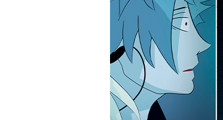
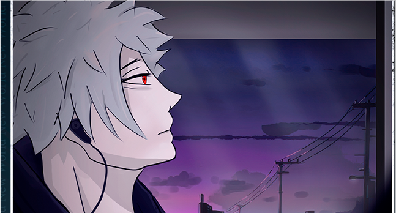
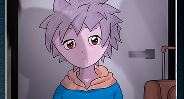
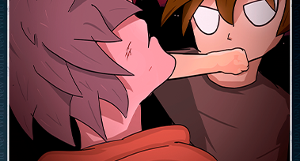

OUR WORKS THAT HAVE ALREADY BEEN PUBLISHED!

Unknown girl
air
I was distracted from my memories by a slight push on my shoulder. Opening my eyes, I noticed the retreating figure of a pretty girl. Her light dress evolved slightly from the warm air currents.


The beginning of the story
The steady motion of the bus was lulling, and the monotonous, slightlymuffled noise of the engine was soothing, causing the passengers to nod listlessly and close their eyes in a ...

Difficult childhood
As luck would have it, just today I woke up with an unpleasant, dragging sensation of anxiety. In the morning I chalked it up to the fact that I again dreamed of ...

Life in an orphanage
Life in the orphanage was difficult. Every day I had to fight for my life with many other children. Each of them was angry at the world, disappointed in life. Some had to steal in order to survive...